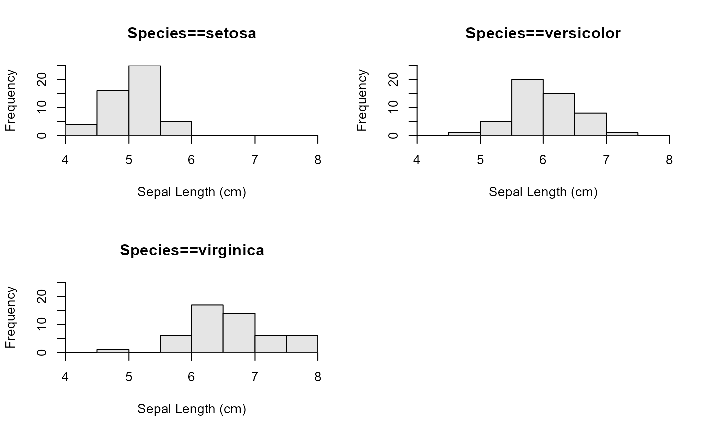
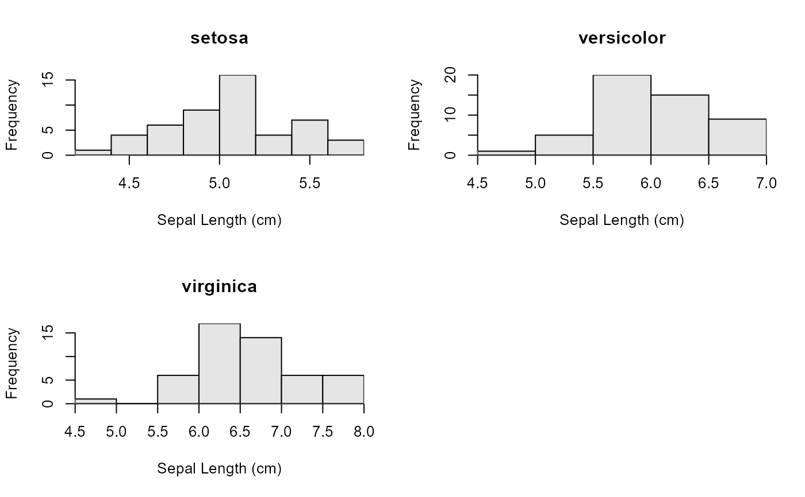
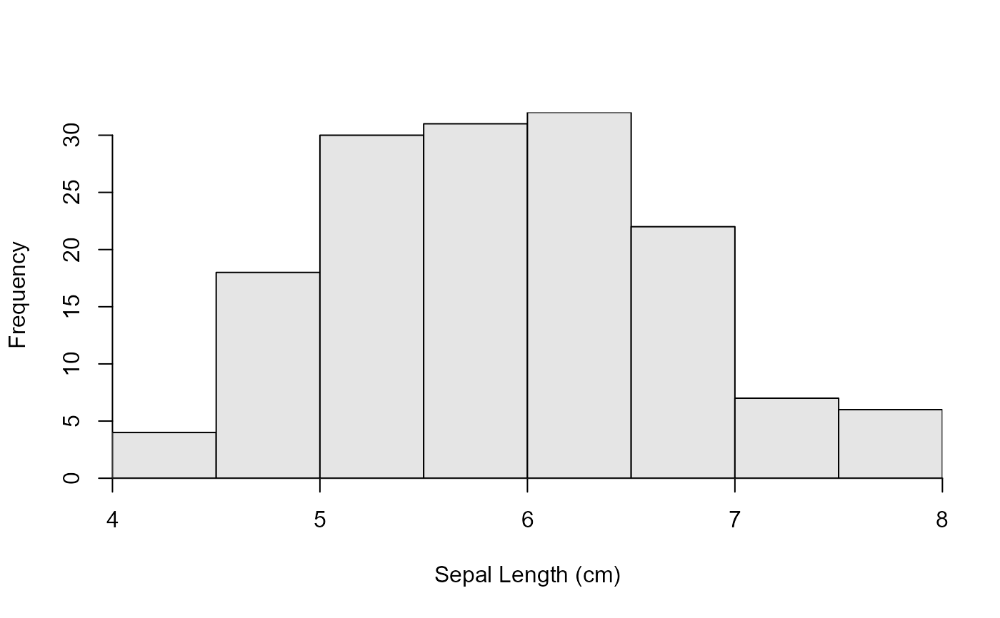
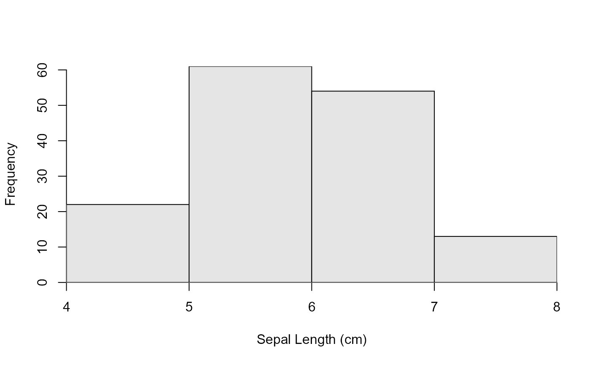
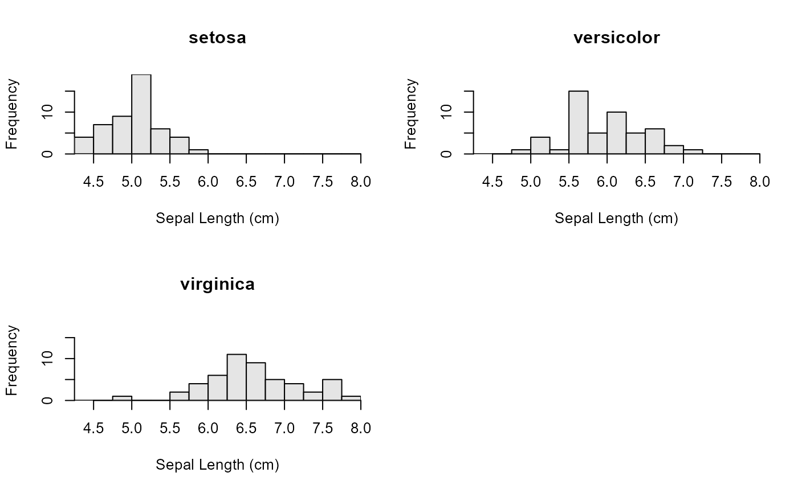

Creates separate histograms of a quantitative variable by levels of a factor variable.
Usage
# S3 method for formula
hist(
formula,
data = NULL,
main = "",
right = FALSE,
pre.main = "",
xlab = NULL,
ylab = "Frequency",
same.breaks = TRUE,
breaks = "Sturges",
w = NULL,
same.ylim = TRUE,
ymax = NULL,
col = "gray90",
nrow = round(sqrt(num)),
ncol = ceiling(sqrt(num)),
byrow = TRUE,
iaxs = TRUE,
...
)Arguments
- formula
A formula. See details.
- data
An optional data frame that contains the variables in the model.
- main
A character string used as the main title for when a SINGLE histogram is produced.
- right
A logical that indicates if the histogram bins are right-closed (left open) intervals (
=TRUE) or not (=FALSE; default).- pre.main
A character string to be used as a prefix for the main title when multiple histograms are produced. See details.
- xlab
A character label for the x-axis. Defaults to name of quantitative variable in
formula.- ylab
A character label for the y-axis. Defaults to “Frequency”.
- same.breaks
A logical that indicates whether the same break values (i.e., bins) should be used on each histogram. Ignored if
breaksorwis provided by the user. Defaults toTRUE.- breaks
A single numeric that indicates the number of bins or breaks or a vector that contains the lower values of the breaks. Ignored if
wis notNULL. Seehistfor more details.- w
A single numeric that indicates the width of the bins to use. The bins will start at “rounded” values depending on the value of
w. Seelencatfor more details.- same.ylim
A logical that indicates whether the same limits for the y-axis should be used on each histogram. Defaults to
TRUE.- ymax
A single value that sets the maximum y-axis limit for each histogram or a vector of length equal to the number of groups that sets the maximum y-axis limit for each histogram separately. If
NULL(default), then a value will be found.- col
A string that indicates the color for the bars on the histogram. Defaults to a light shade of gray (i.e.,
"gray90").- nrow
A single numeric that contains the number of rows to use on the graphic.
- ncol
A single numeric that contains the number of columns to use on the graphic.
- byrow
A single logical that indicates if the histograms should fill rows first (
=TRUEor columns first (=FALSE).- iaxs
A single logical that indicates whether both axes should be plotted using
xaxs="i"andyaxs="i"(the default) orxaxs="r"andyaxs="r"(what R typically does).- ...
Other arguments to pass through to the default
hist().
Value
A graphic is produced and nothing is returned unless formula results in only one histogram. In that case, an object of class "histogram" is returned, which is described in hist.
Details
The formula must be of the form ~quantitative, quantitative~1, quantitative~factor, or quantitative~factor*factor2 where quantitative is the quantitative variable to construct the histograms for and factor or factor2 are factor variables that contain the levels for which separate histograms should be constructed.
If the formula is of the form ~quantitative or quantitative~1 then only a single histogram of the quantitative variable will be produced. This allows hist.formula() to be used similarly to hist() but with a data= argument.
The function produces a single (but see below) graphic that consists of a grid on which the separate histograms are printed. The rows and columns of this grid are determined to construct a plot that is as square as possible. However, the rows and columns can be set by the user with the nrow= and ncol= arguments. If the product of the number of rows and number of columns set by the user is less than the total number of histograms to be constructed then multiple pages of histograms will be produced (each requiring the user to click on the graph to go to the next graph). The x-axis of each separate histogram will be labeled identically. The default x-axis label is the name of the quantitative variable. This can be changed by the user with the xlab= argument.
The default for right= is not the same as that used in hist() from graphics. Thus, right-open (left-closed) bins are the default.
The iaxs= argument defaults to TRUE so that xaxs="i" and yaxs="i" are used for both axes, which eliminates the “floating” x-axis that R typically plots for histograms.
Note
Students often need to look at the distribution of a quantitative variable separated for different levels of a categorical variable. One method for examining these distributions is with boxplot(quantitative~factor). Other methods use functions in Lattice and ggplots2 but these packages have some learning ‘overhead’ for newbie students. The formula notation, however, is a common way in R to tell R to separate a quantitative variable by the levels of a factor. Thus, this function adds code for formulas to the generic hist function. This allows newbie students to use a common notation (i.e., formula) to easily create multiple histograms of a quantitative variable separated by the levels of a factor.
References
Ogle, D.H. 2016. Introductory Fisheries Analyses with R. Chapman & Hall/CRC, Boca Raton, FL.
Author
Derek H. Ogle, DerekOgle51@gmail.com, but this implementation is largely a modification of the code provided by Marc Schwartz on the R-help mailing list on 1Jun07.
Examples
## Using the defaults
hist(Sepal.Length~Species,data=iris)
## Add x-labels and use a pre-fix on the main labels
hist(Sepal.Length~Species,data=iris,xlab="Sepal Length (cm)",
pre.main="Species==")

## Use different breaks and different y-axis limits for each graph
hist(Sepal.Length~Species,data=iris,xlab="Sepal Length (cm)",
same.breaks=FALSE,same.ylim=FALSE)

## Single histogram without grouping using formula notation
hist(~Sepal.Length,data=iris,xlab="Sepal Length (cm)")

## Using the bin width argument
hist(~Sepal.Length,data=iris,xlab="Sepal Length (cm)",w=1)

hist(Sepal.Length~Species,data=iris,xlab="Sepal Length (cm)",w=0.25)
